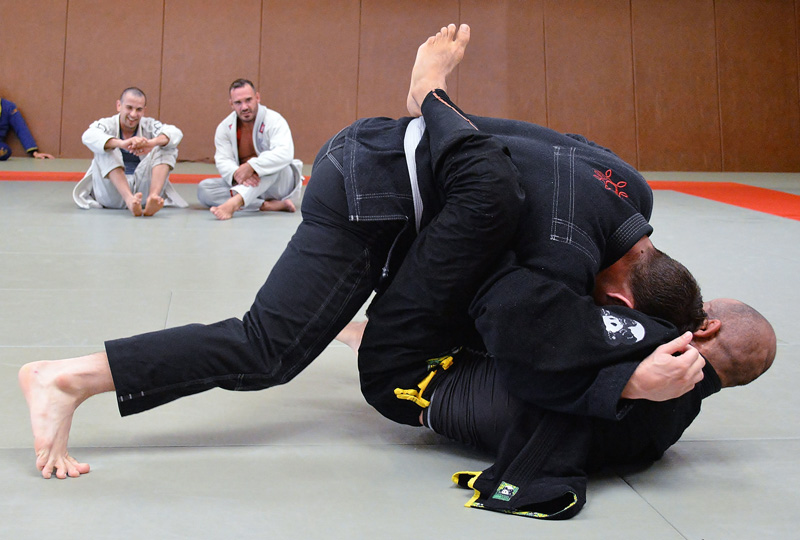
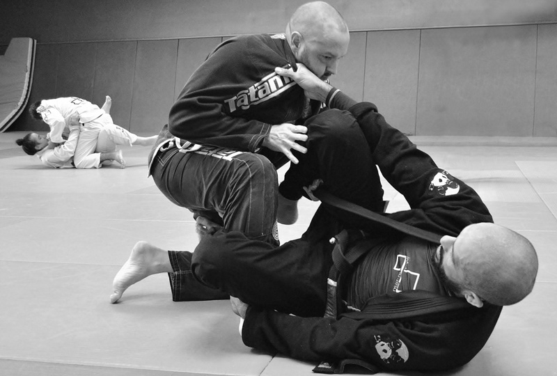
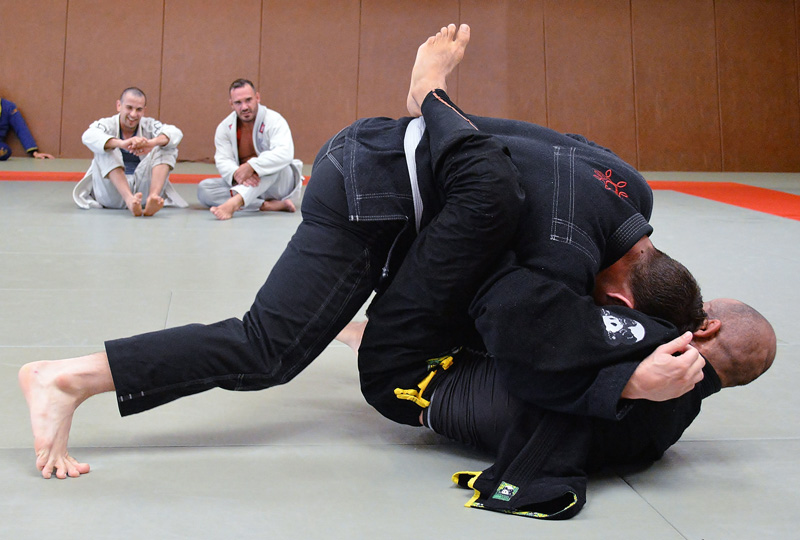
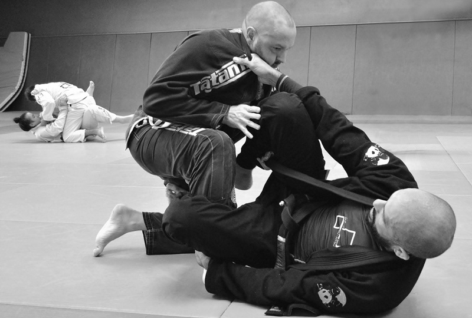
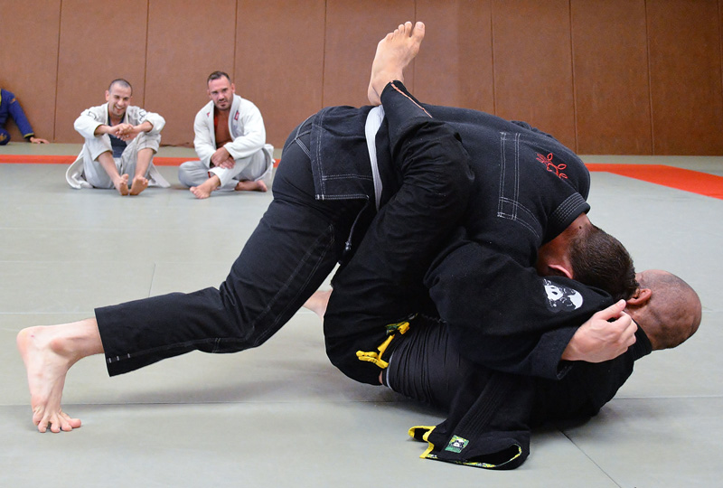
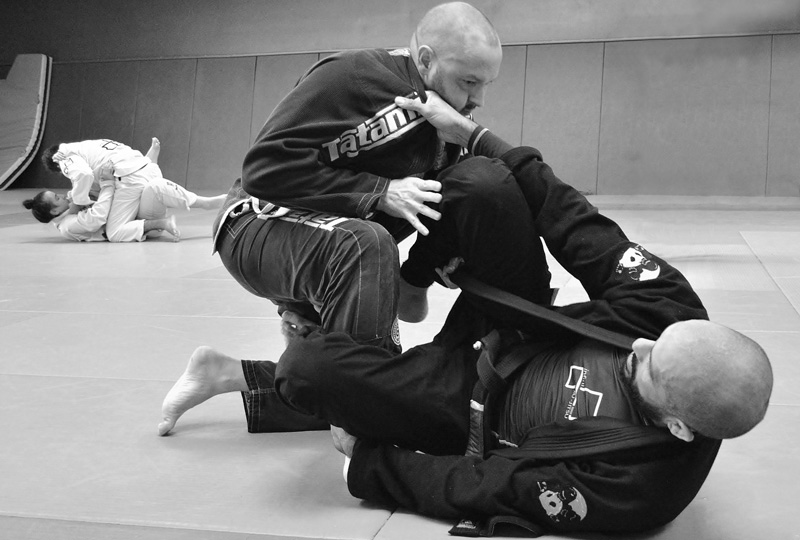

Brazilian Jiu-Jitsu (or BJJ) is a martial art which came from Judo and Japanese Jiu-Jitsu. Since its inception in the 1920’s in Brazil, this combat sport is booming all over the world.
BJJ focuses on ground fighting and the use of joint-locks or chokeholds to defeat an opponent rather than using striking techniques. This is a strategy and a combat art which allows anyone, no matter the size or weight, to defeat a stronger and heavier opponent. BJJ enables anybody to develop his/her own fighting style.
While the discipline is a tried and tested self-defence method, everyone can enjoy it on its own terms. Whether you come for the strategic mindgame of the fights or to get in better shape, we’re sure BJJ has something for you.
Brazilian Jiu-Jitsu constantly evolves and offers limitless learning, fueled by the contributions of its community. Infini Jiu-Jitsu, the historical Brazilian Jiu-Jitsu and grappling club of Strasbourg, is built around these values and offer classes for all levels. We gladly welcome any newcomers and visitors on our mats!


Infini Jiu-Jitsu is part of the SOIG. We are also members of the CFJJB and a BJJ Globetrotters affiliate!